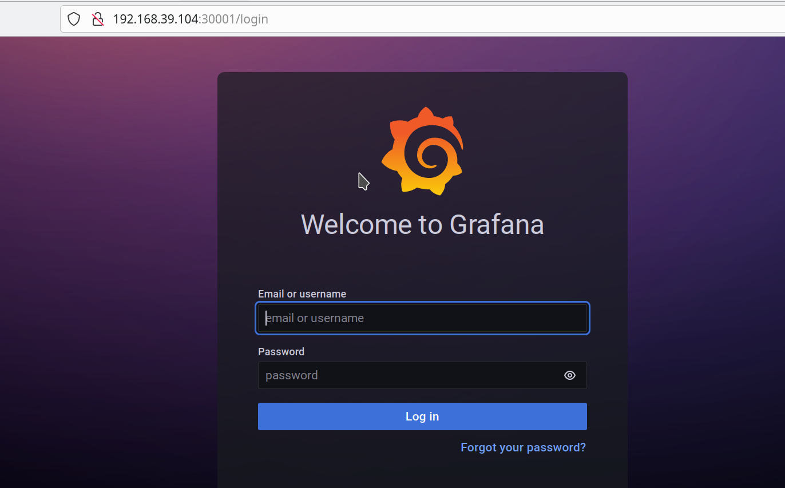

Instalando graphana y prometheus en un cluster¶
-
Buscar el paquete en artifacts hub: kube-prometheus-stack
-
Instalar el paquete:
$ helm repo add prom-repo https://prometheus-community.github.io/helm-charts
#"prom-repo" has been added to your repositories
$ helm repo update
# Hang tight while we grab the latest from your chart repositories...
# ...Successfully got an update from the "prom-repo" chart repository
# ...Successfully got an update from the "prometheus-community" chart repository
# ...Successfully got an update from the "bitnami" chart repository
# ...Successfully got an update from the "strimzi" chart repository
# Update Complete. ⎈Happy Helming!⎈
$ helm install my-kube-prometheus-stack prom-repo/kube-prometheus-stack
# NAME: my-kube-prometheus-stack
# LAST DEPLOYED: Tue Sep 6 12:43:31 2022
# NAMESPACE: default
# STATUS: deployed
# REVISION: 1
# NOTES:
# kube-prometheus-stack has been installed. Check its status by running:
# kubectl --namespace default get pods -l "release=my-kube-prometheus-stack"
# Visit https://github.com/prometheus-operator/kube-prometheus for instructions on how to create & configure Alertmanager and Prometheus instances using the Operator.
-
Ver todo lo que se instalo
$ kubectl get all NAME READY STATUS RESTARTS AGE pod/alertmanager-my-kube-prometheus-stack-alertmanager-0 2/2 Running 0 75s pod/my-kube-prometheus-stack-grafana-f6f4b9bbf-4t6xx 3/3 Running 0 78s pod/my-kube-prometheus-stack-kube-state-metrics-7db8d845ff-fw6ww 1/1 Running 0 78s pod/my-kube-prometheus-stack-operator-5fc76fc95d-r8zgt 1/1 Running 0 78s pod/my-kube-prometheus-stack-prometheus-node-exporter-pdsgh 1/1 Running 0 78s pod/my-release-nginx-86445978c4-cqmgj 1/1 Running 2 (38h ago) 5d19h pod/nginx 1/1 Running 4 (38h ago) 92d pod/nginx-app-68cc968bbb-ljl99 1/1 Running 3 (38h ago) 6d20h pod/prometheus-my-kube-prometheus-stack-prometheus-0 2/2 Running 0 74s NAME TYPE CLUSTER-IP EXTERNAL-IP PORT(S) AGE service/alertmanager-operated ClusterIP None <none> 9093/TCP,9094/TCP,9094/UDP 75s service/kubernetes ClusterIP 10.96.0.1 <none> 443/TCP 92d service/my-kube-prometheus-stack-alertmanager ClusterIP 10.103.81.182 <none> 9093/TCP 78s service/my-kube-prometheus-stack-grafana ClusterIP 10.109.202.64 <none> 80/TCP 78s service/my-kube-prometheus-stack-kube-state-metrics ClusterIP 10.103.232.64 <none> 8080/TCP 78s service/my-kube-prometheus-stack-operator ClusterIP 10.104.93.232 <none> 443/TCP 78s service/my-kube-prometheus-stack-prometheus ClusterIP 10.97.75.96 <none> 9090/TCP 78s service/my-kube-prometheus-stack-prometheus-node-exporter ClusterIP 10.97.206.26 <none> 9100/TCP 78s -
Para poder acceder al dashboard de grapaha se debe exponer el servicio
service/my-kube-prometheus-stack-grafanaen este caso con unNodePort, para eso hay que editar el servicio
Se deben hacer las siguientes modificaciones:
- Cambiar spec.type por NodePort
- Agregar spec.ports.nodeport con el valor 30001, este atributo no funciona con los servicios ClusterIP
Antes
apiVersion: v1
kind: Service
metadata:
annotations:
meta.helm.sh/release-name: my-kube-prometheus-stack
meta.helm.sh/release-namespace: default
creationTimestamp: "2022-09-06T17:43:39Z"
labels:
app.kubernetes.io/instance: my-kube-prometheus-stack
app.kubernetes.io/managed-by: Helm
app.kubernetes.io/name: grafana
app.kubernetes.io/version: 9.0.5
helm.sh/chart: grafana-6.32.10
name: my-kube-prometheus-stack-grafana
namespace: default
resourceVersion: "1054945"
uid: 6be59343-45db-4dc3-a5d0-7f1f890baf92
spec:
clusterIP: 10.109.202.64
clusterIPs:
- 10.109.202.64
externalTrafficPolicy: Cluster
internalTrafficPolicy: Cluster
ipFamilies:
- IPv4
ipFamilyPolicy: SingleStack
ports:
- name: http-web
port: 80
protocol: TCP
targetPort: 3000
type: ClusterIP
selector:
app.kubernetes.io/instance: my-kube-prometheus-stack
Despues
apiVersion: v1
kind: Service
metadata:
annotations:
meta.helm.sh/release-name: my-kube-prometheus-stack
meta.helm.sh/release-namespace: default
creationTimestamp: "2022-09-06T17:43:39Z"
labels:
app.kubernetes.io/instance: my-kube-prometheus-stack
app.kubernetes.io/managed-by: Helm
app.kubernetes.io/name: grafana
app.kubernetes.io/version: 9.0.5
helm.sh/chart: grafana-6.32.10
name: my-kube-prometheus-stack-grafana
namespace: default
resourceVersion: "1054945"
uid: 6be59343-45db-4dc3-a5d0-7f1f890baf92
spec:
clusterIP: 10.109.202.64
clusterIPs:
- 10.109.202.64
externalTrafficPolicy: Cluster
internalTrafficPolicy: Cluster
ipFamilies:
- IPv4
ipFamilyPolicy: SingleStack
ports:
- name: http-web
port: 80
protocol: TCP
targetPort: 3000 # (1)
nodePort: 30001 # (2)
type: NodePort
selector:
app.kubernetes.io/instance: my-kube-prometheus-stack
- obtener la ip de
minikube
- abrir el navegador en la url
192.168.39.104:30001
